2 Installation
EdgeSet can run either as a single-user desktop application or as a multi-user web application.
2.1 Desktop Application
Note that the desktop application is a standalone EdgeSet installation: it does not require or support connecting to the web application. It is intended for use when the web application cannot be installed.
2.1.1 Requirements
- macOS 13+1
- 12GB of free disk space
- EdgeSet license key
- internet connection
1 The desktop application is tested on Apple Silicon Macs only, not Intel Macs.
2.1.2 Installation
- Download EdgeSet from https://www.tetmon.com/EdgeSet.dmg.
- Open your Downloads folder and double-click the
EdgeSet.dmgfile. 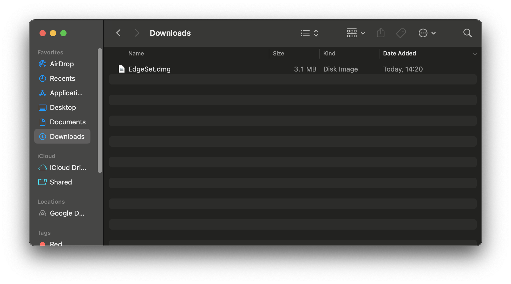 - Drag the EdgeSet icon to the Applications folder. 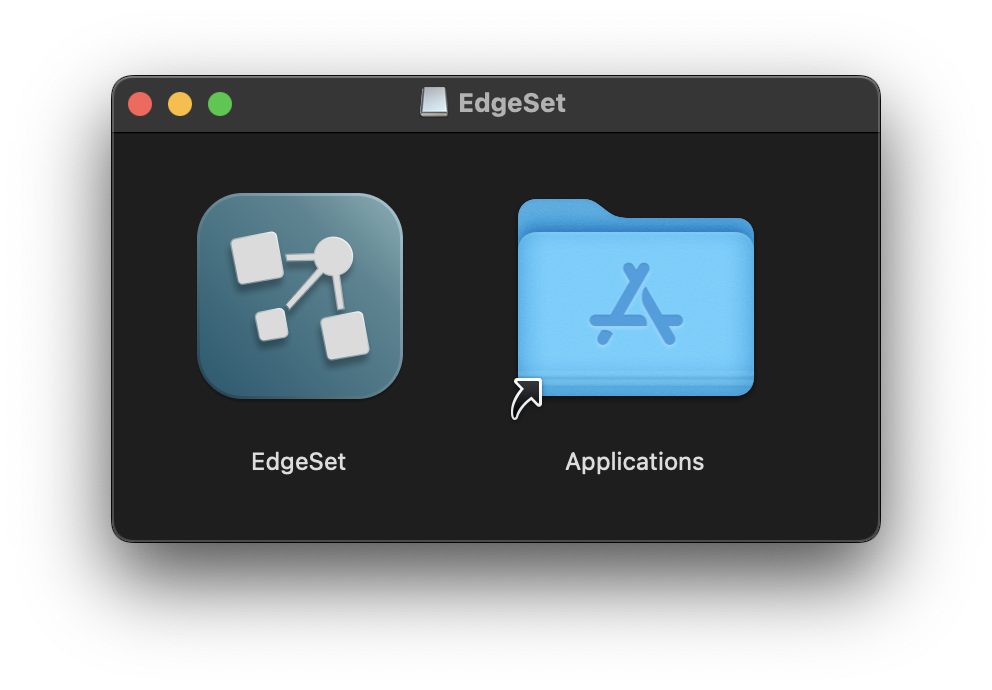
- Open the EdgeSet application from the Applications folder. 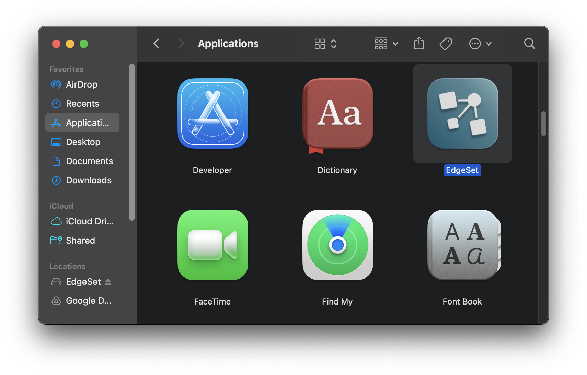
- When you first start EdgeSet, you might see the following prompt. Click
Opento proceed. 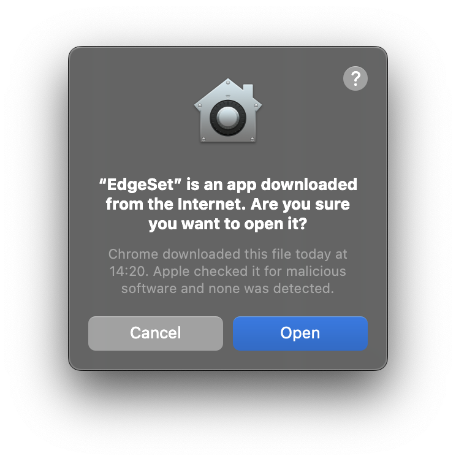 - During installation and whenever you launch EdgeSet, you might be prompted to allow EdgeSet access to the keychain. EdgeSet will only access data that it stores on the keychain itself. Select
Always Allow.2 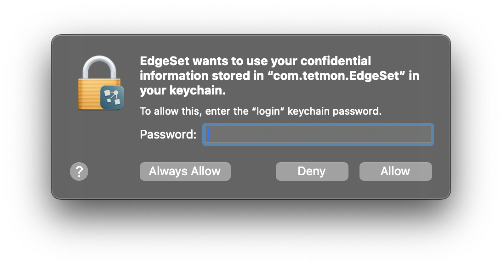 - EdgeSet will begin downloading the query engine. This is a one-time setup. 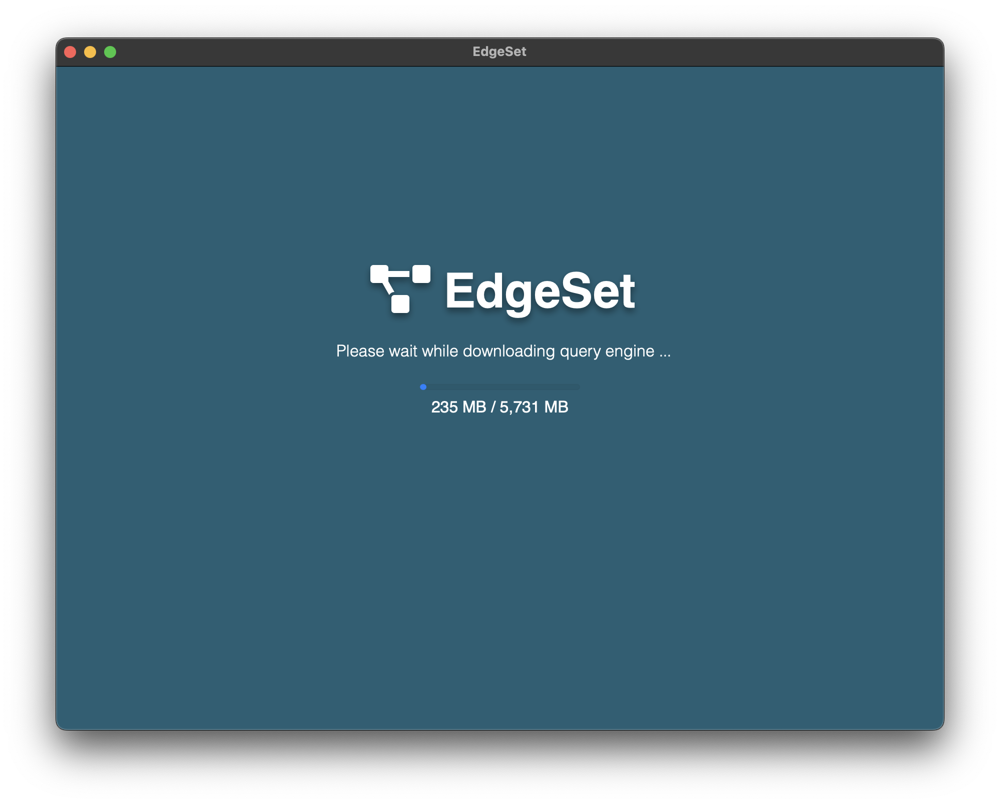
- Once the query engine download is complete, EdgeSet will start up. 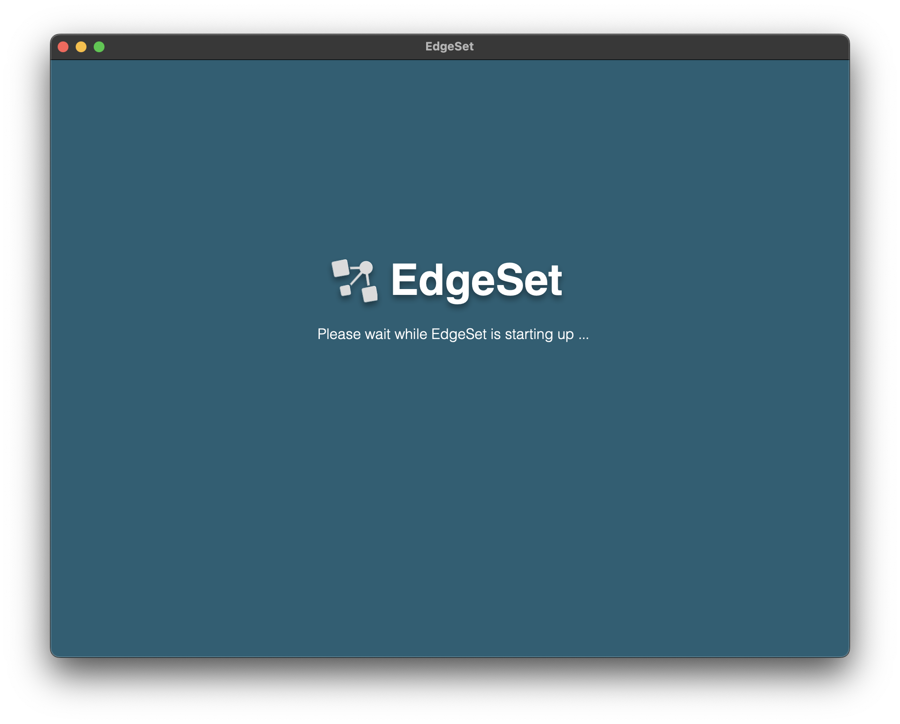
- The first time EdgeSet starts, it will prompt you for your license key. 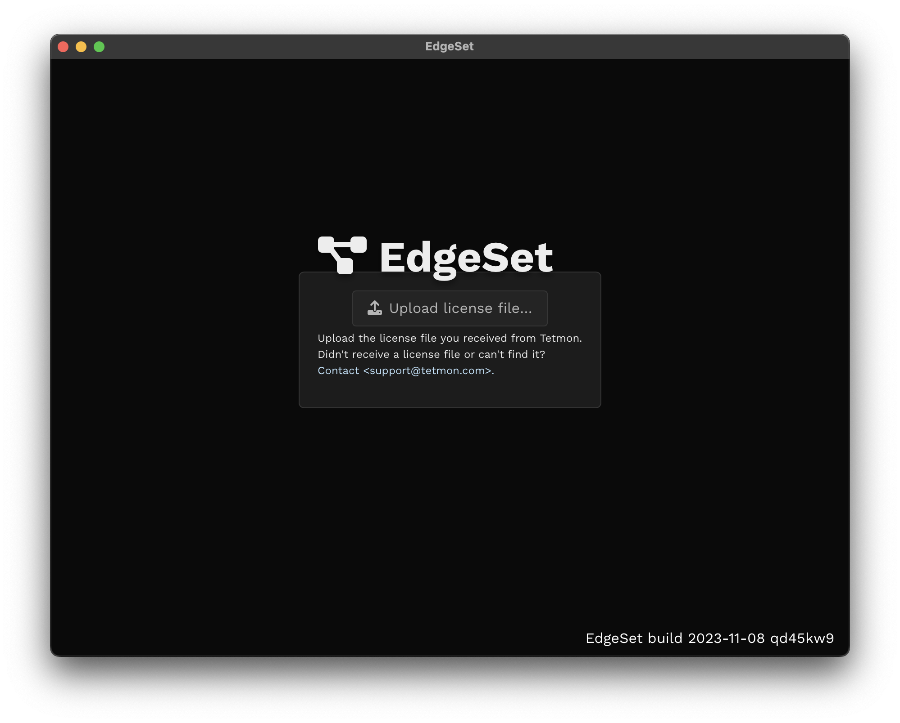
- Click
Upload license file…andOpenthe license.key file you were provided. 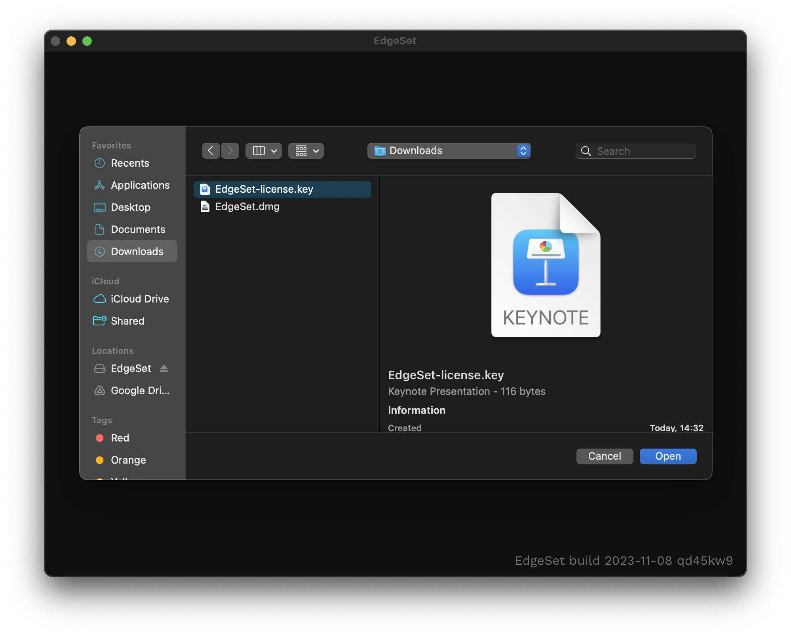 - EdgeSet will show a brief loading screen with progress indicator while it generates an encryption key. Then the EdgeSet interface will appear and you are ready to begin adding data sources. 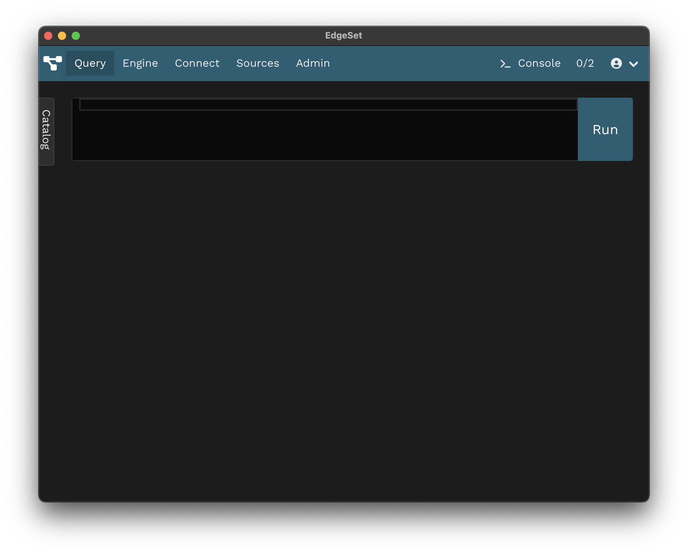
2 EdgeSet uses the macOS keychain to store credentials in order to protect your data from other applications on the system.
2.1.3 Uninstallation
- To uninstall EdgeSet, move the EdgeSet Application to the Trash. 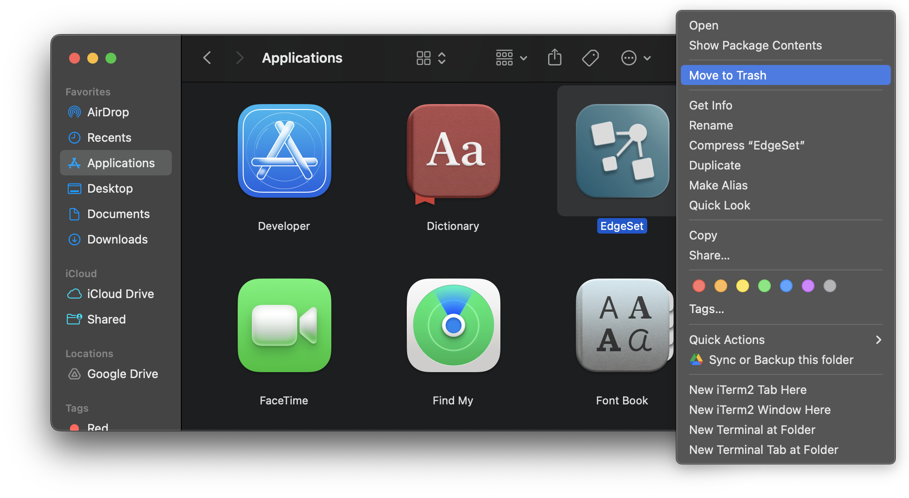
- Open the ~/Library/Application Support folder and move the EdgeSet folder there into the Trash (this is the folder that holds the query engine).3 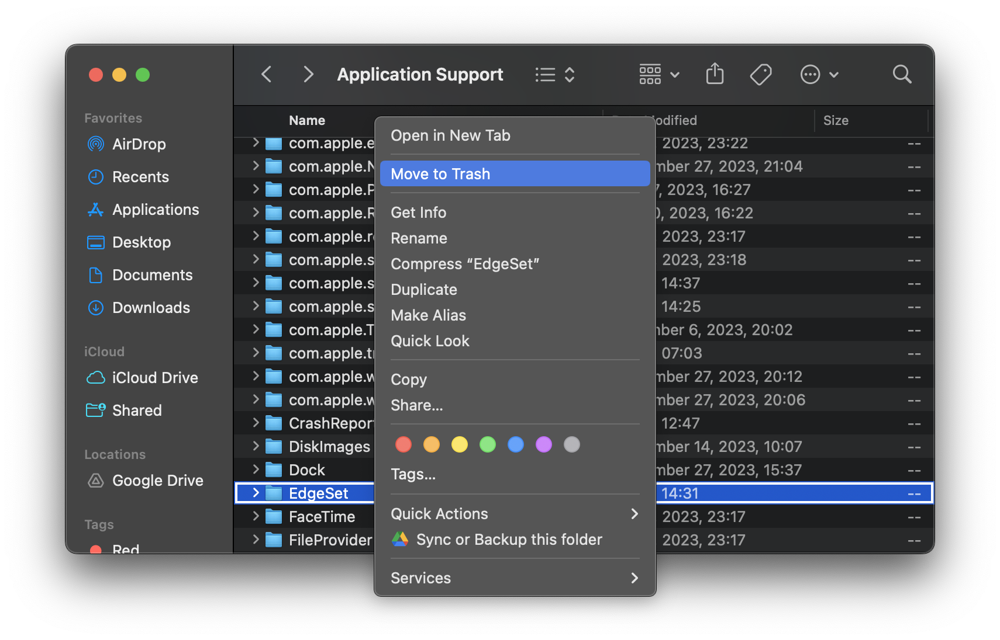
3 To easily navigate to the Application Support folder from the Finder, you can press ⌘Command + Shift + G and type in ~/Library/Application Support.
2.2 Web Application
2.2.1 Requirements
EdgeSet is designed to run on-premise or in a private cloud. You can install it on a physical server (“bare metal”) or a VM (such as from AWS, Azure, Digital Ocean, etc.).
EdgeSet requires a 64-bit Intel-compatible (x86-64) or ARM64 (aarch64) CPU.
| Concurrent query slots | Memory | Disk |
|---|---|---|
| 2 | 8GB | 16GB |
| 5 | 12GB | 20GB |
| 15 | 24GB | 30GB |
| 50 | 64GB | 60GB |
EdgeSet also requires UEFI support.4
4 Most computers since 2006 have UEFI support.
2.2.2 AWS
Launch an EC2 instance using the EdgeSet AMI ID provided to you.
2.2.3 Digital Ocean
Import the provided EdgeSet disk image URL (x86_64 or arm64) to your DigitalOcean account as a “Custom Image” (see https://www.digitalocean.com/blog/custom-images/). Launch a droplet with the custom image.
2.2.4 Unattended Installer ISO
You can install EdgeSet on physical hardware and most VMs via the unattended installer ISO.
The unattended installer ISO will automatically partition the first connected hard drive of any machine it boots on.